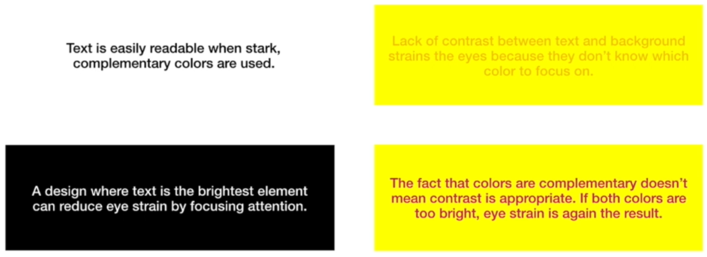
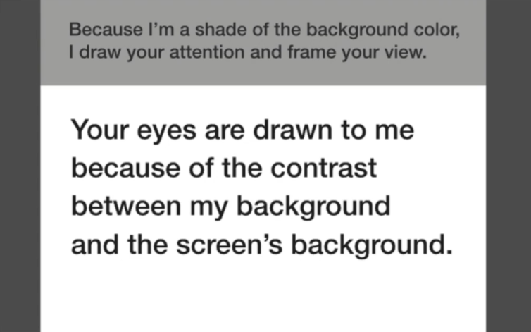

Jump to a section
31 · Using Contrast to Improve Readability, Attention and Focus
Refined 15 October 2026 from the supplied Joe Natoli course notes. Original wording and captures remain preserved.
Core principle
Readable foreground/background differences and deliberate hierarchy help information stand out.
Application to game tools
Keep all essential labels readable; use size, spacing and emphasis to distinguish importance rather than simply fading secondary text.
Assessment and qualification
Dark versus light theme readability depends on user, environment and typography. Complementary hues do not guarantee sufficient luminance contrast.
Try it
Can the user read the secondary information they need to act safely?
Source: 31 Using Contrast to Improve Readability, Attention and Focus.md
Study detail and teaching translation
Readability depends on the foreground/background pair and the treatment of the text. An attractive palette can still produce difficult labels.
Emphasis should create a useful hierarchy while leaving supporting information readable. Fading all secondary labels is not a sound default.
Teaching adaptation: inspect labels, data rows, placeholders, disabled states and focus separately. Use measured contrast as one benchmark; do not infer readability from complementary hue choices.
Original captures

